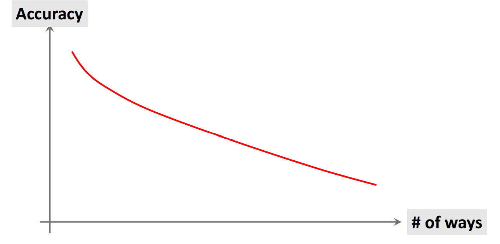

Few-Shot Learning
Few-Shot Learning 基本概念
问题引入
仅凭借左边两类四个样本不能够训练出一个泛化性能良好的深度神经网络来回答上述问题
Supervised Learning vs. Few-Shot Learning
Traditional supervised learning

- Test samples are never seen before
- Test samples are from known classes
Few-shot learning
- Query samples are never seen before
- Query samples are from unknown classes
Few-shot learning做什么
Few-shot learning希望模型在一个大的Training Set（每个类别个体数目很多）学习到事物之间的异同，仅通过给出一个Support Set（每个类别个体数目很少），而且在训练期间也没有见过Support Set中的类别，就期待模型能够回答给出的Query Sample是否是Support Set中某一类
与Meta Learning的关系
-
Few-shot learning is a kind of meta learning.
-
Meta learning: learn to learn. Few-shot learning正是在Training Set学会了学习（分辨事物异同），因为它能够对没有见过的类别图像Support Set以及Query Sample之间推断相似度
基本术语
k-way n-shot Support Set
- k-way: the support set has k classes
- n-shot: every class has n samples
Prediction Accuracy
下面的结论很容易从直觉上理解

Few-shot learning怎么做
Basic Idea：Learn a similarity function: sim(x, x’)
Ideally, sim (x1,x2) = 1, sim(x1,x3) = 0, and sim(x2,x3) = 0
- First, learn a similarity function from large-scale training dataset
- Then, apply the similarity function for prediction
- Compare the query with every sample in the support set
- Find the sample with the highest similarity score
Siamese Network
Learning Pairwise Similarity Scores
- 在Training Set中构造Training Data，准备相同数量的正负样本，正样本是同类别的sample pair，负样本是不同类别的sample pair
- 一个卷积神经网络用作特征提取
-
将sample pair输入到同一个神经网络，得到提取的特征h1与h2，二者相减后求绝对值得到z向量表示二者的差异
-
z向量通过全连接层得到一个标量，经过sigmoid运算后与标签求cross entropy loss
-
梯度回传更新网络参数
- 对于负样本
- One-Shot Prediction
Triplet Loss
-
构造训练数据，sample一张图片作为锚点，在同类别中sample一张作为正样本，在另一类中sample一张作为负样本
-
输入同一个神经网络，分别得到正负样本与锚点特征向量的差的二范数的平方
我们希望，d+越小越好，d-越大越好
-
loss定义
-
Update the CNN (function f) to decrease the loss
-
One-Shot Prediction
Pretraining and Fine Tuning
Few-Shot Prediction Using Pretrained CNN
- The CNN can be pretrained using standard supervised learning or Siamese network
- Pretrain a CNN for feature extraction
以3-way 2-shot为例，预训练的网络对每个类别提取到的特征向量求平均，再让其二范数等于1得到μ1,μ2,μ3三个向量作为每个类别的表征
Making Few-Shot Prediction
对于Query图片同样输入到预训练网络经过normalize得到二范数为1的向量，我们将矩阵M与q向量相乘，即是在求μ1,μ2,μ3与q向量的余弦相似度，对结果进行softmax得到3维向量，数值最大的分量所在类别即视为对Query的预测结果，当然，对于下面的例子很容易看出q与μ1最为接近，属于第一个类别
Fine-Tuning
上面的Pretrain方法我们是利用了预训练的网络再接一个softmax分类器，而且softmax分类器的参数W是用下面图示方法设置并固定的，b采用的是零向量
其实我们还可以利用带有标注信息的Support Set对这个分类器的参数甚至是预训练的特征提取网络进行Fine-Tuning，下面这个方法简单但涨点明显
-
Let (xj,yj) be a labeled sample in the support set
-
f(xj) is the feature vector extracted by the pretrained CNN
-
pj = Softmax(W·f(xj) + b) is the prediction
-
min ∑j CrossEntropy(yj,pj) + Regularization (Sum over all the samples in the support set)
Trick 1: A Good Initialization
- A good initialization: W = M and b = 0
Trick 2: Entropy Regularization
- Let x be a query sample
- p = Softmax(W·f(xj) )+ b is the prediction
- Entropy: ℍ(p) = − ∑i pilogpi
- Entropy regularization: mean of ℍ(p) , for all query samples
- Encourage the entropy regularization to be small
Trick 3: Cosine Similarity + Softmax Classifier
Standard Softmax classifier：
Replacing inner product by cosine similarity: